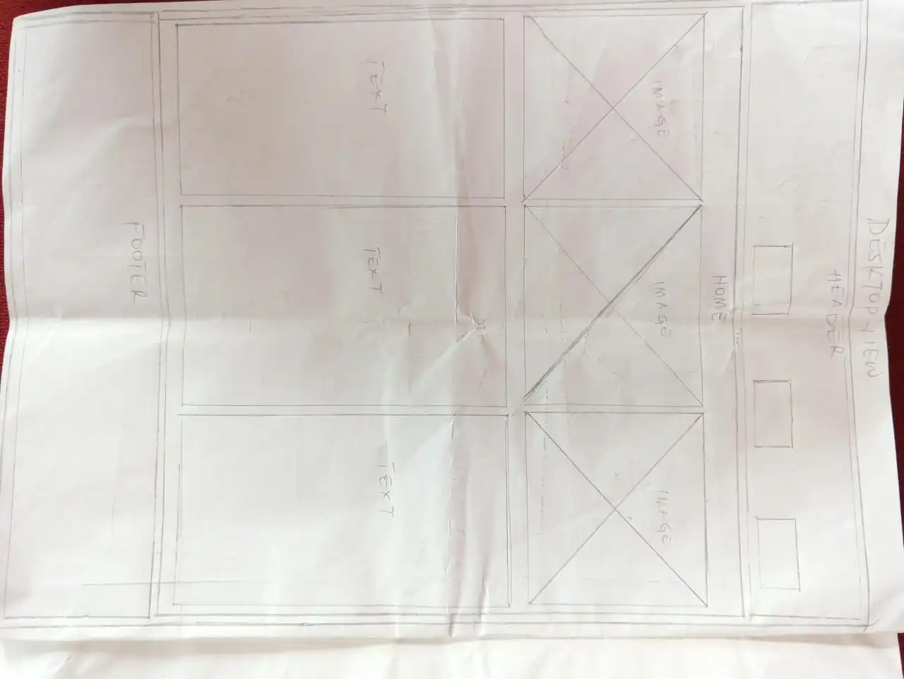
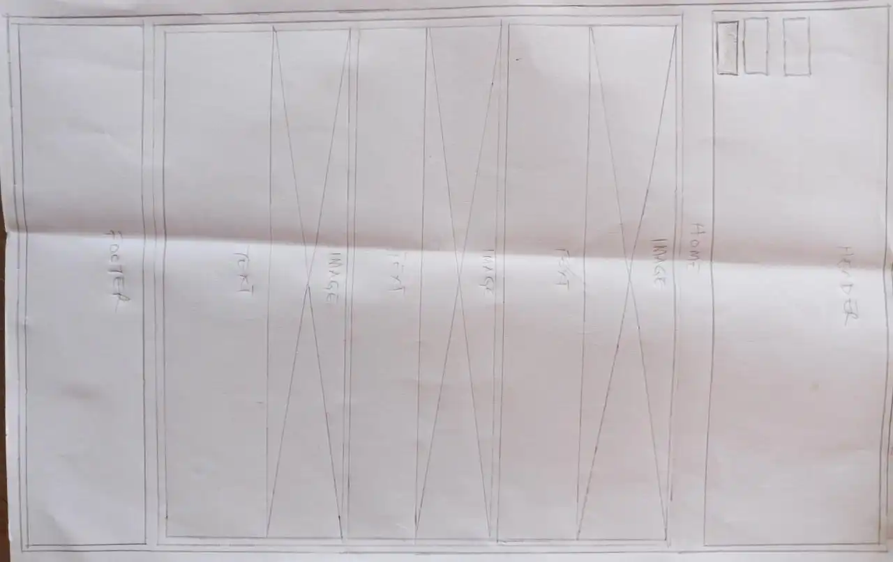

Site Purpose
Aba is a vibrant commercial city located in Abia State, southeastern Nigeria. Known for its industrious spirit and bustling marketplaces, Aba has earned a reputation as one of Nigeria's foremost centers of trade and commerce.
Aba is renowned across the globe for the number of footballers it churns out as well as its contributions to sports development in the country and the continent at large.
Scenarios
Aba is a hub for small and medium-sized enterprises (SMEs), with many artisans and entrepreneurs engaged in various trades, including shoe-making, garment manufacturing, and metalwork. The city is known for its innovative and industrious population, which drives its economic vitality.
The city has a mix of modern and traditional infrastructure, with ongoing efforts to improve roads, transportation, and utilities. The presence of banks, hotels, and other commercial establishments supports its role as a commercial center.
Aba, also known as Enyimba City, plays host to the most successful football club in Nigeria, Enyimba Football Club. Enyimba is the only football club in Nigeria to have ever won the CAF Champions League with back-to-back victories.
Color Schema
- Blue: Used in the header and footer.
- White: Used in the background.
Typography
- Heading Font: Joti One
- Paragraph Font: Ubuntu
Wireframe
Desktop View
Mobile View
